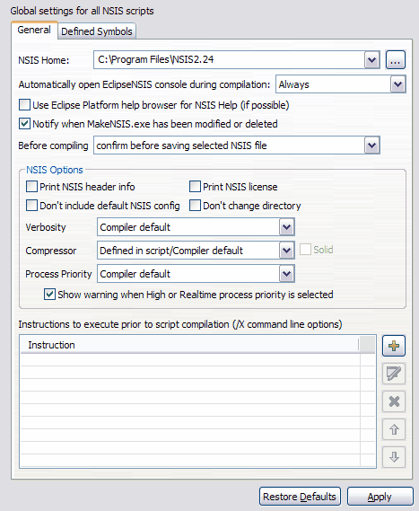

EclipseNSIS
These preferences are used to
set global settings for NSIS scripts,
including
command
line options for the MakeNSIS compiler. These options are applied
during script compilation, unless overridden on the script level (see
the Properties
section).
The EclipseNSIS Preferences page has two tabs:
General

- NSIS Home
- Location of NSIS installation. This is the folder where makensis.exe can be found. In case there are multiple NSIS installations, e.g. in a development environment, the drop-down combo remembers the locations you specified, so that they are available for quick NSIS home selection. ← Back
- Automatically open NSIS console
- Automatically open the EclipseNSIS console view when compiling a script. If the view is already open, it is activated. ← Back
- Use Eclipse integrated help browser
- Use the Eclipse integrated help browser to display NSIS help. If this option is unchecked, then the NSIS htmlhelp file is opened instead. ← Back
- Print NSIS header info
- Prints out information on what options were used to compile MakeNSIS was compiled with. Equivalent to the /HDRINFO compiler option. ← Back
- Print NSIS license
- Displays a keen license page. Equivalent to the /LICENSE compiler option. ← Back
- Do not include default NSIS config
- Disables inclusion of <path to makensis.exe>\nsisconf.nsh. Without this parameter, installer defaults are set from nsisconf.nsh.. Equivalent to the /NOCONFIG compiler option. ← Back
- Don't change directory
- Disables the current directory change to that of the .nsi file. Equivalent to the /NOCD compiler option. ← Back
- Verbosity
- Sets the verbosity of the compiler output. Equivalent to the /V compiler option. ← Back
- Compressor
- Sets the default compressor for NSIS scripts. This overrides any compressor settings in the script. When the Best compressor option is selected, all compressors are tried, and the one with the best compression is used for creating the installer. ← Back
- Instructions
- Instructions for the MakeNSIS compiler to execute prior to compiling the script. Equivalent to the /X compiler option. The following buttons allow the manipulation and configuration of instructions. ← Back
Defined Symbols

- Defined Symbols
- Symbols to be defined by the MakeNSIS compiler prior to compiling the script. Equivalent to the /D compiler option. The following buttons allow the manipulation and configuration of symbol definitions. ← Back
Previous | Contents | Next
Copyright © 2004, 2005 Sunil Kamath (IcemanK).